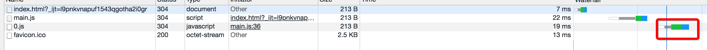
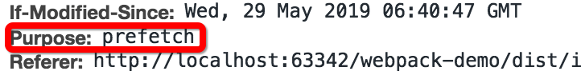
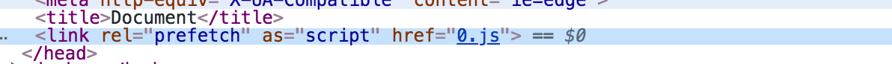
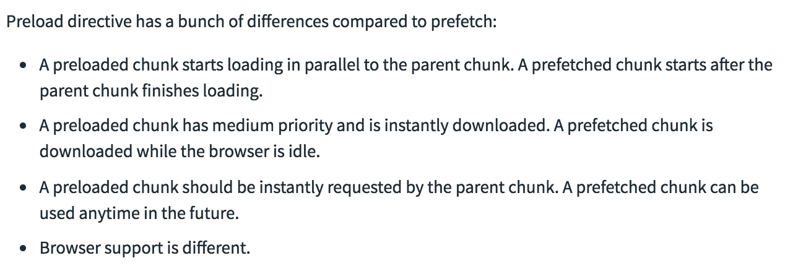
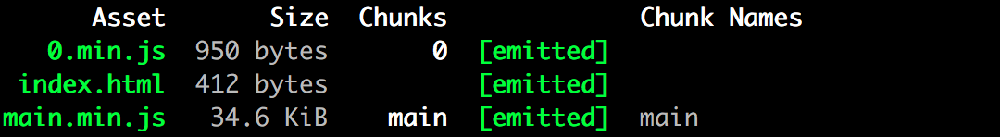

本篇文章主要记录 webpack 的代码分离的几种方式，由此再去理解通过代码分离可以做哪些前端优化：如懒加载和预先加载。之后再介绍了几个易混淆的概念。📚
webpack 代码分离🌲
webpack 代码分离可以有以下这几种方式：
1. 入口起点(entry points)
这种是在入口文件内配置多个 entry,自然可以生成多个文件。1
2
3
4
5
6
7
8
9
10
11
12module.exports = {
mode: 'development',
entry: {
index: './src/index.js',
// 设置的其他入口
another: './src/another-module.js'
},
output: {
filename: '[name].bundle.js',
path: path.resolve(__dirname, 'dist')
}
}
2. 使用 SplitChunksPlugin 插件
它可以将公共的依赖模块提取到已有的 entry chunk 中，或者提取到一个新生成的 chunk1
2
3
4
5
6
7
8
9
10
11
12
13
14
15
16
17
18
19
20
21
22
23
24
25
26
27
28
29
30module.exports = {
//...
optimization: {
// splitChunks: {
// 表明对同步代码和异步代码都做代码分割
//chunks: 'all'
// },
splitChunks: {
chunks: 'async',
minSize: 30000,
maxSize: 0,
minChunks: 1,
maxAsyncRequests: 5,
maxInitialRequests: 3,
automaticNameDelimiter: '~',
name: true,
cacheGroups: {
vendors: {
test: /[\\/]node_modules[\\/]/,
priority: -10
},
default: {
minChunks: 2,
priority: -20,
reuseExistingChunk: true
}
}
}
}
}
3. 使用动态导入方法
1 | function getComponent() { |
import() 调用会在内部用到 promises。如果在旧版本浏览器中使用 import()，记得使用一个 polyfill 库（例如 es6-promise 或 promise-polyfill），来 shim Promise。
其实这里的动态导入(dynamic imports)既是代码分割的一种方法，也是一种懒加载的方法。在下面仔细讲。
4. 预取/预加载模块(prefetch/preload module)
这个也是可以进行代码分离的一种方法，它可以使用类似下面这种语法，生成 link tag 并追加到页面头部，指示着浏览器在闲置时间预取 login-modal-chunk.js 文件。1
2// <link rel="prefetch" href="login-modal-chunk.js">
import(/* webpackPrefetch: true */ 'LoginModal');
这样就会生成了一个login-modal-chunk.js的js文件，也就是分离了代码。这种方法正好和懒加载相反。下面会再进行解释。
lazy loading🌶
上面提到了动态加载是代码分割的方法，这也顺便实现了懒加载的方法。下面总结下实际工程中，一般我们怎么使用它进行代码优化。
懒加载或者按需加载，是一种很好的优化网页或应用的方式。这种方式实际上是先把你的代码在一些逻辑断点处分离开，然后在一些代码块中完成某些操作后，立即引用或即将引用另外一些新的代码块。这样加快了应用的初始加载速度，减轻了它的总体体积，因为某些代码块可能永远不会被加载。
注意懒加载并不是 webpack 的概念，而是 es6 的概念， webpack只是识别了/* webpackChunkName: 'lodash'*/这种语法。❌这里很容易误以为。
在 es6 语法里有一种import()的提案，这个函数解决了 import 命令本身不能动态加载模块的劣势，而在这前，我们使用 require 是很好做到这一点的：
1 | const file = env === 'production' ? `prod_${filename}` : `sandbox_${filename}` |
import 命令会被 JavaScript 引擎静态分析，先于模块内的其他语句执行。1
2
3
4
5
6
7
8
9
10// Wrong: import 会被提到最上面，file将不被识别
const file = env === 'production' ? `prod_${filename}` : `sandbox_${filename}`
import myModule from file
// Wrong: import 是静态执行，所以不能使用表达式和变量，这些只有在运行时才能得到结果的语法结构。
if (env === 'production') {
import myModule from 'prodFile'
} else {
import myModule from 'sandboxFile'
}
因此出现了 import()函数, import()函数的特性，可以实现：
- 按需加载。也就是懒加载。
- 条件加载，解决了 import 命令不能使用条件的问题。
- 动态的模块路径，路径可以使用变量。解决了 import 命令静态编译不能使用动态路径的问题。
注意叫法的区别:一个是import命令，一个是import函数。
1 | // import()加载模块成功以后，这个模块会作为一个对象，当作then方法的参数。 |
之所以这里解构时是：{default: _}，是因为从 webpack v4 开始，在 import CommonJS 模块时，不会再将导入模块解析为 module.exports 的值，而是为 CommonJS 模块创建一个 artificial namespace object(人工命名空间对象)，我记得我之前遇到过这个问题，但是忘记哪个文章里专门写了，这里贴一篇很好的文章：webpack-4-import-and-commonjs
但是更为常见的一种懒加载的方法，是在 vue 中，结合 vue-router 实现的路由懒加载。这种方法能把不同路由对应的组件分割成不同的代码块，然后当路由被访问的时候才加载对应组件。
使用方式：
1 | const Foo = () => import('./Foo.vue') |
然后这个时候，还可以结合 webpack 的语法，进行代码分割，把把某个路由下的所有组件都打包在同个异步块 (chunk) 中如:1
2
3
4const Foo = () => import(/* webpackChunkName: "foo" */ './Foo.vue')
const Foo1 = () => import(/* webpackChunkName: "foo" */ './Foo1.vue')
const Bar = () => import(/* webpackChunkName: "bar" */ './Bar.vue')
这样 Foo 和 Foo1 将会在一个 chunk 内， bar 又会在一个 chunk 内。
这里注意下：dist 内生成的每一个 js 文件就是一个 chunk,而 minChunks 就表明了什么情况下进行代码分割，若 minChunks = 2, 则意味着生成的 chunk js 文件里，有多少个用到了这个模块，如果有的话才进行代码分割。
预取/预加载模块(prefetch/preload module)🏡
使用上面的 Lazy loading 会存在一个问题，就是它只能在执行某个动作的时候，才会去加载。比如用户点击了登录框，这个时候开始下载js并开始解析执行。
实际上这样对用户来说还是有等待的一个过程的。但是利用 prefetch/preload module 可以解决这个问题。空闲时去提前加载了代码。用户点击时已有缓存，直接去解析执行代码即可。
1 | // 2.js |
这样就会发现，在首页的请求内，也会有 2.js 的请求，并且它的时间是在 index.js 之后。

然后点开这笔请求的详情后，会看到相关的预先加载的信息头purpose: prefetch。

最后查看dom结构，你会发现多了这样一个link文件。

preload和prefetch有许多区别。webpackPreload 会在浏览器闲置下载文件，webpackPreload 会在父 chunk 加载时并行下载文件。对于 preload 我还没有过实践。

几个易混淆的概念❌
filename 与 chunkFilename
filename 是指在 entry 中声明的文件，打包输出后的文件的名称。
chunkFilename 是指未在 entry 中声明，但是却由于代码分离的原因被打包出来的文件的名称。
可以看到 filename 对应于上面代码分离中的第一点
而 chunkFilename 对应于代码分离中的2，3，4点
比如在刚刚的懒加载或者预先加载中，我们进行了代码分离。分离后得到如下结果：

而我们的 output 配置如下：1
2
3
4
5
6entry: './src/index'
output: {
path: path.resolve(__dirname, './dist'),
filename: "[name].min.js"
}
因此可以看到 main.min.js 就是 filename, 而0.min.js就是 chunkFilename
我们可以显试的指明 chunkFilename ,那么生成的文件名称就叫0.chunk.js。1
2
3
4
5output: {
path: path.resolve(__dirname, './dist'),
filename: "[name].min.js",
chunkFilename: "[name].chunk.js"
},
当然很明显 chunkFilename 指定为 [name].chunk.js 并不好，因为生成的是0.chunk.js这种无含义文件名。
这个时候我们就可以结合刚刚的webpackChunkName这种 magic comments 来进行打包。
webpackChunkName，webpackPreload，webpackPreload
这三个都是魔法注释（magic comments）,上面已介绍清楚。这里只总结下语法和用途。
1 | // 为预加载的文件取别名 |
hash chunkhash contenthash
hash是跟整个项目的构建相关，只要项目里有文件更改，整个项目构建的hash值都会更改，并且全部文件都共用相同的hash值。
1 | entry:{ |
因此，若 index.js 文件变化时， vendor 最后生成 output 的文件名也会发生变化，都相同。这样无法利用缓存，因为hash与项目相关，只要项目变了，hash就会变。
这里注意下，如果是老版本的webpack, 即使是你文件都没有更改，只是重新构建了，也有可能导致 hash 的值不一样。这是因为它有个 manifest 文件，里面记录了 vendor 和 main 的联系，它即存在于vendor里，又有可能存在main里，它每次构建可能有不同，导致了每次的构建都不一样，hash就也变化了。可以使用 runtimeChunk 来解决这个问题。以保证老版本里，代码没变，hash也没变的问题。
chunkhash和hash不一样，它根据不同的入口文件(Entry)进行依赖文件解析、构建对应的chunk，生成对应的哈希值。
1 | entry:{ |
我们在生产环境里把一些公共库和程序入口文件区分开，单独打包构建，再采用chunkhash的方式生成哈希值，那么只要我们不改动vendor的代码，就可以保证其哈希值不会受影响。这样可以比较有效的利用缓存。
而只使用 chunkhash 也会有问题，若一个index.js文件中引入了一个css文件，那么它将会打包到和index.js一起，那么如果只是css变化了，他们又公用一个chunk, 那么index.js虽然没有变化，但是文件名也会发生变化。
为了解决这个问题，我们使用extract-text-webpack-plugin这个插件，然后结合contenthash,即可保证css变化时，js不发生变化。
它会将所有的入口 chunk(entry chunks)中引用的 *.css，移动到独立分离的 CSS 文件。因此，你的样式将不再内嵌到 JS bundle 中，而是会放到一个单独的 CSS 文件（即 styles.css）当中。 如果你的样式文件大小较大，这会做更快提前加载，因为 CSS bundle 会跟 JS bundle 并行加载。
contenthash 将根据资源内容创建出唯一 hash，也就是说文件内容不变，hash 就不变。
1 |
|
contenthash一般我只在 ExtractTextPlugin 使用，在 filename和chunkfilename中，我们不会设置为这个值，而是使用chunkhash。
并且chunkhash,contenthash和HMR不能同时使用,一般我们不会再dev里这样写，而是在 production 环境中设置。dev环境中我们就用[name].js其实就可以。
因此可以理解为：hash 计算与整个项目的构建相关；chunkhash 计算与同一 chunk 内容相关；contenthash 计算与文件内容本身相关。
这么想来，设计者取名也是非常准确和用心了。
总结🌺
这里上面提到的一些概念，有大概70%我在实践中使用的比较频繁，其他的如 prefetch 和 preload,我基本没有使用到过。希望后续自己有意识去使用，并观察是否真的有效果。📚
prefech 的兼容性会比 preload 好些。他们之间还有许多区别，我先不去做了解了。
最主要的目的还是希望自己对某个知识点是系统化的，而不是只知道其中的一点。细节可以不去了解，但是基本的这些思想希望能记住，然后再某些需要的时候，再去使用。